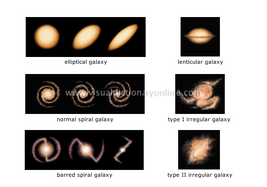

Галактика (на старогръцки: Γαλαξίας – Млечен път) е гравитационно свързана система от звезди, междузвезден газ и прах, плазма и невидима тъмна материя. Всички обекти в състава на галактиката участват в движението около общия център на масата. В състава на галактиките влизат и различни видове звездни купове и мъглявини, като повечето от звездите в галактиките са част от система от две или повече звезди.
Типичните галактики съдържат от един милион до хиляда милиарда звезди, гравитиращи около общ гравитационен център. Въпреки, че все още не е добре изучена и разбрана, се предполага, че тъмната материя съставлява около 90% от масата на повечето галактики. Последните изследвания и наблюдения дават основание да се счита, че масивни черни дупки съществуват в центъра на повечето, ако не на всички галактики.
Галактиките са далечни обекти, като разстоянието до най-близките от тях е прието да се измерва в мегапарсеки, а до по-отдалечените в единици, свързани с червеното отместване. C невъоръжено око е възможно да се различат само 3 галактики (освен нашия Млечен път): мъглявината Андромеда, Големият и малкият Магеланови облаци.
До началото на 1990-те класифицираните галактики, в които е възможно да се видят отделни звезди, наброяват не повече от 30. След изнасянето на космическия телескоп „Хъбъл“ и въвеждането в строй на 10-метрови наземни телескопи броят на галактиките, в които могат да се различат отделни звезди, рязко нараства.
Галактиките се отличават с огромно разнообразие. Различават се различни типове галактики в зависимост от формата и структурата им. Учените са дали имена на над 200 000 галактики. Четирите основни вида са елиптична, спирална, неправилна и пръстеновидна, макар че съществуват и други видове.
Характеристичният ъгъл е ъгълът между допирателната към най-изпъкналата част на спиралния ръкав и правата, свързваща тази най-изпъкнала точка с центъра на ядрото. Той варира между 0° и 90°. Когато ъгълът е 90°, спиралата се изражда в окръжност, а колкото по-малък е този ъгъл, толкова по-разгънат е спиралният ръкав.

| Спирални галактики (S, SB) | Елиптични галактики (E) | Неправилни галактики (I) | |
| Форма и структура | Силно сплескан диск от звезди и газ, спирални ръкави и дебело ядро в центъра | Без диск, звездите са равномерно разпределени, Е0 е сферична форма, Е7 е силно издължена елиптична | Нямат определена структура или форма |
| Съдържание на звезди | Съдържа млади и стари звезди, халото е само от стари звезди, новите звезди се намират в ръкавите | Съдържа само стари звезди, няма данни за образуване на нови звезди в последните 30 милиона години | Съдържа млади и стари звезди, засилено образуване на нови |
| Съдържание на газ и прах | Съдържа големи количества прах и газ | Почти не съдържа никакъв прах или газ | Изобилие от прах и газ |
| Движение | Газта и прахът се движат в кръгови орбити около центъра на галактиката, звездите имат произволни орбити | Произволни орбити на звездите | Газта и прахът имат неправилни орбити |